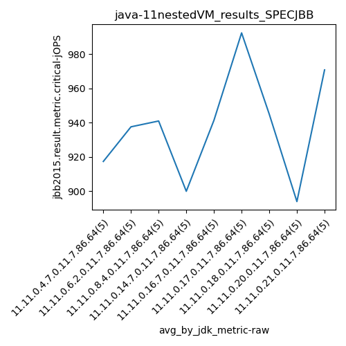

java-11 SPECJBB
Context at bottom
/home/jvanek/git/benchmarks-in-nested-virtualisation-toolchain/final_results/nestedVM_results/nestedVM_results_J2DBENCH
java-11
SPECJBB
/home/jvanek/git/benchmarks-in-nested-virtualisation-toolchain/final_results/nestedVM_results/nestedVM_results_RADARGUNs3
java-11
SPECJBB
/home/jvanek/git/benchmarks-in-nested-virtualisation-toolchain/final_results/nestedVM_results/nestedVM_results_DACAPO
java-11
SPECJBB
/home/jvanek/git/benchmarks-in-nested-virtualisation-toolchain/final_results/nestedVM_results/nestedVM_results_JMH
java-11
SPECJBB
/home/jvanek/git/benchmarks-in-nested-virtualisation-toolchain/final_results/nestedVM_results/nestedVM_results_SPECJBB
java-11
SPECJBB
nestedVM_results_SPECJBB
- nestedVM_results_SPECJBB - max-jops
- nestedVM_results_SPECJBB - critical jops
nestedVM_results_SPECJBB - max-jops
Expected number of java-11 JDKs: 9
1st avgmed_alljdks_metric:
/home/jvanek/git/benchmarks-in-nested-virtualisation-toolchain/final_results/result_processing.py /home/jvanek/git/benchmarks-in-nested-virtualisation-toolchain/final_results/nestedVM_results/nestedVM_results_SPECJBB jbb2015.result.metric.max-jOPS False
values: [4665, 4722, 4778, 4963, 4946, 4722, 4890, 4778, 5194, 4905, 4778, 4722, 4905, 4946, 5111, 5111, 5111, 4976, 5059, 4909, 5136, 4963, 5102, 5003, 4976, 4968, 5245, 5245, 5111, 5111, 5044, 5111, 4931, 5044, 5111, 4848, 5171, 5111, 5111, 5059, 5111, 4976, 5313, 4976, 5284]
Expected number of iterations: 5
final number of values: 45 out of 45
Pass rate: 100.0%
values: (4665, 5313, 5005.6, 5003)

** accuracy from all jdks and runs
more is better
MIN: 4665
MAX: 5313
AVG: 5005.6
MED: 5003
Relative differences 1:
MIN-MAX: 12.0 %
MIN-AVG: 7.0 %
MIN-MED: 7.0 %
MAX-MIN: -14.0 %
MAX-AVG: -6.0 %
MAX-MED: -6.0 %
AVG-MED: -0.0 %
stored to java-11.properties. sort | uniq that!
2nd avgmed_by_jdk_metric:
values: [4814.8, 4897.8, 4892.4, 5033.2, 5036.0, 5136.0, 5048.2, 5060.0, 5132.0]

values: [4778, 4890, 4905, 5059, 5003, 5111, 5044, 5111, 5111]

values: (4814.8, 5136.0, 5005.6, 5036.0)
values: (4778, 5111, 5001.333333333333, 5044)

** accuracy from all jdks where runs were avged
more is better
MIN: 4814.8
MAX: 5136.0
AVG: 5005.6
MED: 5036.0
Relative differences 1:
MIN-MAX: 6.0 %
MIN-AVG: 4.0 %
MIN-MED: 4.0 %
MAX-MIN: -7.0 %
MAX-AVG: -3.0 %
MAX-MED: -2.0 %
AVG-MED: 1.0 %
stored to java-11.properties. sort | uniq that!
** accuracy from all jdks where runs were medianed
more is better
MIN: 4778
MAX: 5111
AVG: 5001.333333333333
MED: 5044
Relative differences 1:
MIN-MAX: 7.0 %
MIN-AVG: 4.0 %
MIN-MED: 5.0 %
MAX-MIN: -7.0 %
MAX-AVG: -2.0 %
MAX-MED: -1.0 %
AVG-MED: 1.0 %
stored to java-11.properties. sort | uniq that!
nestedVM_results_SPECJBB - critical jops
Expected number of java-11 JDKs: 9
1st avgmed_alljdks_metric:
/home/jvanek/git/benchmarks-in-nested-virtualisation-toolchain/final_results/result_processing.py /home/jvanek/git/benchmarks-in-nested-virtualisation-toolchain/final_results/nestedVM_results/nestedVM_results_SPECJBB jbb2015.result.metric.critical-jOPS False
values: [898, 960, 971, 824, 934, 899, 919, 971, 928, 971, 923, 1012, 919, 992, 859, 885, 913, 954, 929, 819, 865, 929, 957, 1030, 926, 974, 987, 1056, 1039, 906, 900, 1010, 1009, 903, 903, 953, 883, 893, 852, 889, 1050, 976, 907, 971, 950]

Expected number of iterations: 5
final number of values: 45 out of 45
Pass rate: 100.0%
values: (819, 1056, 937.7333333333333, 929)

** accuracy from all jdks and runs
more is better
MIN: 819
MAX: 1056
AVG: 937.7333333333333
MED: 929
Relative differences 1:
MIN-MAX: 22.0 %
MIN-AVG: 13.0 %
MIN-MED: 12.0 %
MAX-MIN: -29.0 %
MAX-AVG: -13.0 %
MAX-MED: -14.0 %
AVG-MED: -1.0 %
stored to java-11.properties. sort | uniq that!
2nd avgmed_by_jdk_metric:
values: [917.4, 937.6, 941.0, 900.0, 941.4, 992.4, 945.0, 894.0, 970.8]

values: [934, 928, 923, 913, 929, 987, 903, 889, 971]

values: (894.0, 992.4, 937.7333333333333, 941.0)
values: (889, 987, 930.7777777777778, 928)

** accuracy from all jdks where runs were avged
more is better
MIN: 894.0
MAX: 992.4
AVG: 937.7333333333333
MED: 941.0
Relative differences 1:
MIN-MAX: 10.0 %
MIN-AVG: 5.0 %
MIN-MED: 5.0 %
MAX-MIN: -11.0 %
MAX-AVG: -6.0 %
MAX-MED: -5.0 %
AVG-MED: 0.0 %
stored to java-11.properties. sort | uniq that!
** accuracy from all jdks where runs were medianed
more is better
MIN: 889
MAX: 987
AVG: 930.7777777777778
MED: 928
Relative differences 1:
MIN-MAX: 10.0 %
MIN-AVG: 4.0 %
MIN-MED: 4.0 %
MAX-MIN: -11.0 %
MAX-AVG: -6.0 %
MAX-MED: -6.0 %
AVG-MED: -0.0 %
stored to java-11.properties. sort | uniq that!
/home/jvanek/git/benchmarks-in-nested-virtualisation-toolchain/final_results/nestedVM_results/nestedVM_results_RADARGUNs1
java-11
SPECJBB
pass rates:
nestedVM_results_SPECJBB=100.0%
Context:
- nestedVM_results
- SPECJBB